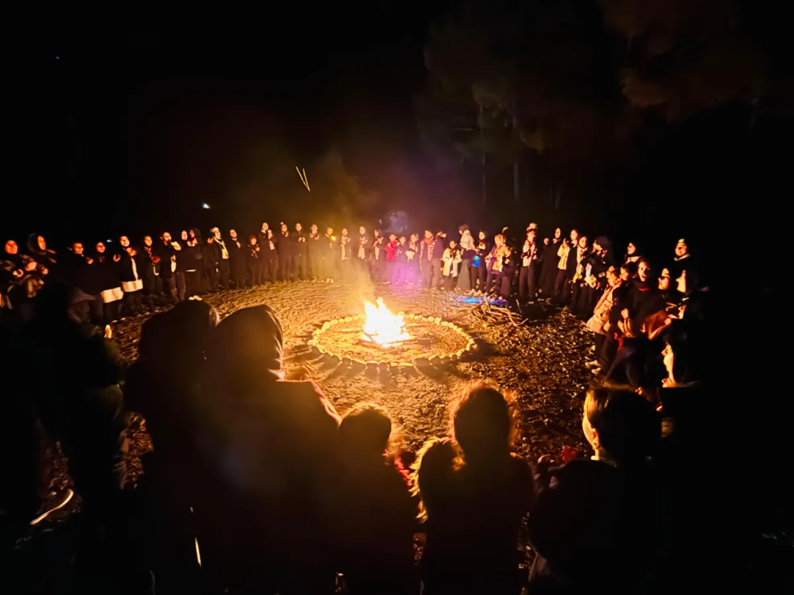
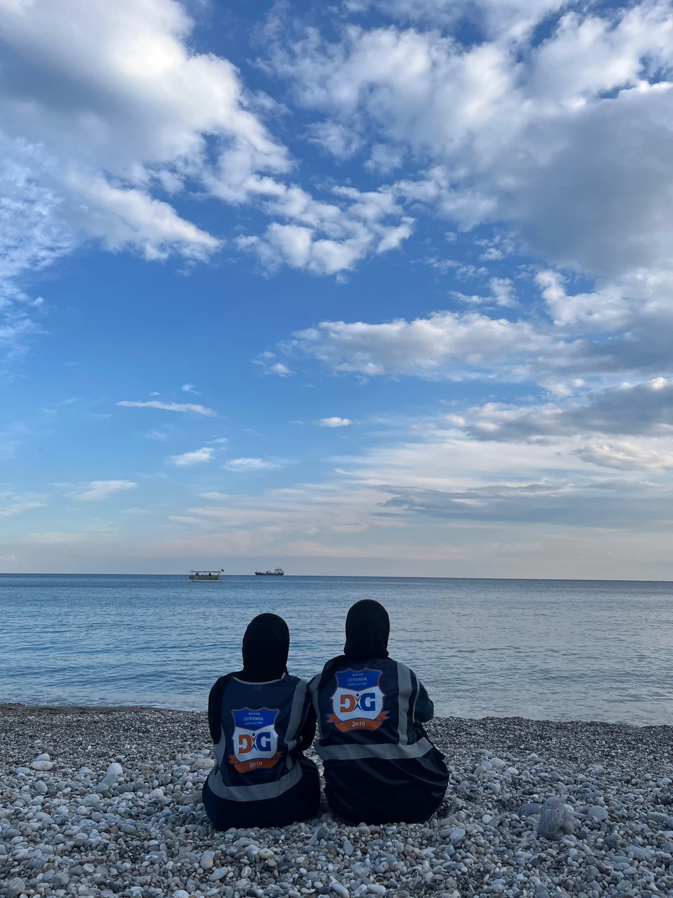
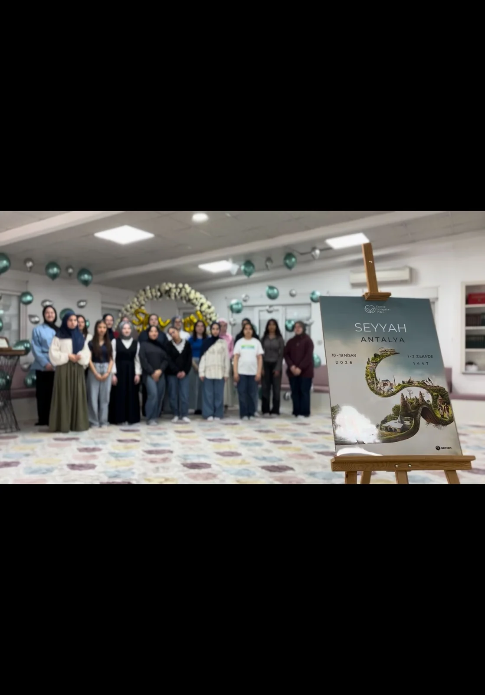

Akdeniz Dinamik Kız Bölümü; 7'den 18'e kız gönüllülerimizle doğada karakter inşa eden, millî ve manevî değerlerle yürüyen bir topluluk.
Kendini bulmak için her zaman uzaklara gitmen gerekmez; bazen doğaya bir adım atman yeter. İşte biz, o adımı atan gençleriz. Şehrin gürültüsünde kaybolmak yerine yönünü doğaya çeviren, yüreğini iyiliğe adayan dinamik bir gençlik…
Genç Çevre Gönüllüleri olarak, karakter inşa eden bir yolun yolcularıyız. Sadece dağları aşmıyor; attığımız her adımda irademizi ve kimliğimizi güçlendiriyoruz. Millî ve manevî değerlerle yürüyen bir gençlik için yola çıkıyoruz.
Akdeniz Dinamik Spor Kulübü'nün köklü ruhunu Genç Çevre Gönüllüleri olarak bugüne taşıyor; aynı inançla, aynı adanmışlıkla geleceğe ilerliyoruz.
Yaktığımız her kamp ateşi; köklerimize olan bağlılığın, kardeşliğin ve ortak inancın etrafında toplanmaktır. Sen de bu ateşin etrafında yerini al… İzini bırak.

Ateşin Etrafında
Akdeniz Sahili7–11 yaş kız ekibimiz; hayat boyu taşıyacakları alışkanlıkların temelini attıkları, merakın ve aidiyet duygusunun en güçlü olduğu bir dönemdedir.
Akdeniz Dinamik Spor Kulübü olarak hedefimiz; sadece fiziksel hareketlilik sağlamak değil, enerjilerini doğru yönlendirebilecekleri, özgüven kazanacakları ve İslami değerlere uygun bir çevrede yetişmeye ihtiyaçları olduğunun bilincini onlara aktarmaktır.
Kaşifler Kız Ekibi ile klasik kalıpları bir kenara bırakıyor; aylık düzenli aralıklarla gerçekleştirdiğimiz özel faaliyet buluşmalarında bir araya geliyoruz. Bu buluşmalarda ekibimize; doğal yaşamda kullanabilecekleri pratik bilgiler öğretirken, doğru bir insan ve vakarlı bir Müslüman olmanın güzelliğini anlatıyoruz.
Attığımız her adımı, yaptığımız her etkinliği bizleri İslam'ın zarafetine yaklaştıran birer vesile olarak görüyoruz. Tüm minik kaşiflerimizi bu gönül halkasına davet ediyoruz.
Araştırmacılar; 11–15 yaş aralığındaki gönüllü çevreci kız çocuklarından oluşan, doğayı seven, öğrenmeye açık ve birlikte gelişmeyi hedefleyen özel bir topluluktur.
Bu ekipte yer alan çocuklarımız; fiziksel, ruhsal ve manevî yönlerini güçlendirecek etkinliklerle hem kendilerini keşfeder hem de yaşadıkları dünyaya karşı bilinçli bireyler olarak yetişirler.
Yıl boyunca düzenlenen kamplar, doğa yürüyüşleri, sosyal sorumluluk faaliyetleri, atölyeler ve manevî gelişim buluşmaları sayesinde çocuklarımız hem eğlenir hem de öğrenirler. Yapılan her faaliyet; özgüven geliştirmeyi, birlikte hareket etmeyi ve güçlü bir ahlaki duruş oluşturmayı destekleyecek şekilde planlanır.
Doğayı koruyan, değerlerine sahip çıkan ve geleceğe umutla yürüyen güçlü nesiller yetiştirmek için birlikte çalışıyoruz.
Geleceğimizin mimarı olan 15–18 yaş aralığındaki gençlerimizin bu kıymetli yolculuğunda onlara eşlik ediyor; hem doyasıya eğlenebilecekleri hem de maneviyatla beslenecekleri güvenli bir alan oluşturuyoruz.
Temel gayemiz; doğanın sunduğu zenginlikleri değerlerimizle harmanlayarak, gençlerimize kendi arkadaş gruplarıyla katılabilecekleri nitelikli programlar sunmaktır. Onları yalnızca vakit geçirecekleri sıradan etkinliklere değil; içlerindeki cevheri parlatıp ufuklarını genişletecekleri ilham verici tecrübelere davet ediyoruz.
Kurduğumuz samimi ve güvene dayalı bağ sayesinde, huzuru, özgüveni ve güzel ahlakı kuşanan Maceracılar ekibimiz; kazandıkları bu yüksek motivasyonla eğitim hayatlarında da pozitif yönde ilerliyorlar.

Akdeniz Dinamik Spor Kulübü olarak çıktığımız bu yolda, attığımız her adımı bir hikâye, yaşadığımız her anı kalplerimize ilmek ilmek nakşettiğimiz kıymetli birer emanet olarak görüyoruz.
Kulüp bünyesinde tüm gönüllülerimizi bir araya getiren, ortak ruhumuzun şekillendiği merkezî projelerimiz.
Akdeniz Dinamik Kız Bölümü'nün yerel düzeyde sürdürdüğü çalışmalar ve özel faaliyetler.
Yerel faaliyet ve projelerimiz hazırlanıyor. Çok yakında burada, ekiplerimizle birlikte yaşadığımız hikâyelerle olacağız.
Kardeşlik, kamp, başarı: Dinamik Kız bölümünden anlamlı anlar ve yeni hikayeler.
Kamp, sohbet halkası, fidan dikimi: kız bölümümüzün anlarını kaçırmamak için Instagram'da bizi takip edin.
7–18 yaş arası her kız için bir yer var. Üç ekibimizden hangisi sana yakınsa, ilk buluşman bizden, izini bırakmak senden.